Projects
Five projects, 2023–2025.
From a first-year Processing platformer to a solo VR horror capstone in Unreal Engine. Jump straight to one with the links above, or scroll through everything below.
01 — Solo · VR Horror
Darker
A psychological horror experience built for VR. Players take on the role of Adrian Hale, exploring the abandoned Chamber Six of the Veyla Institute — only to discover they aren't the original Adrian at all, but a manufactured consciousness trapped in an experimental loop. As the sole developer over a 13-week capstone, I built every system: a phase-managed state machine, VR interaction and raycast pickup, dynamic lighting with a battery-managed flashlight, a render-texture security-camera puzzle, and a dual-ending choice system. This was my first project in both Unreal Engine and VR.
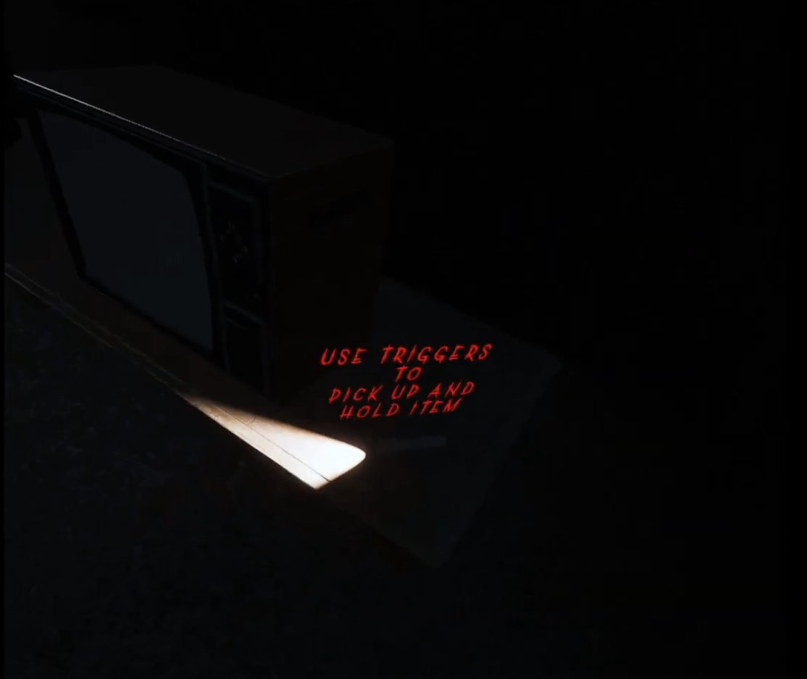
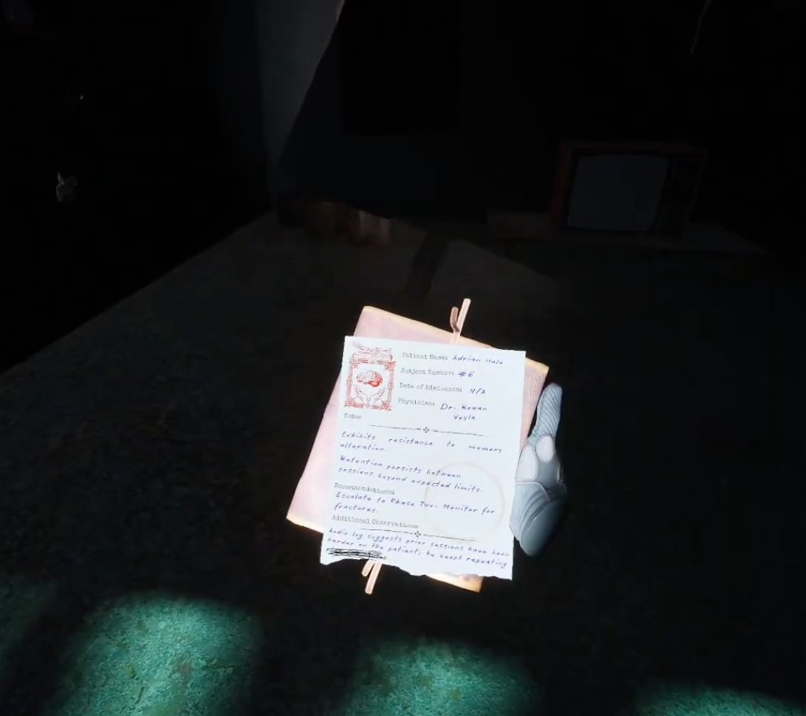
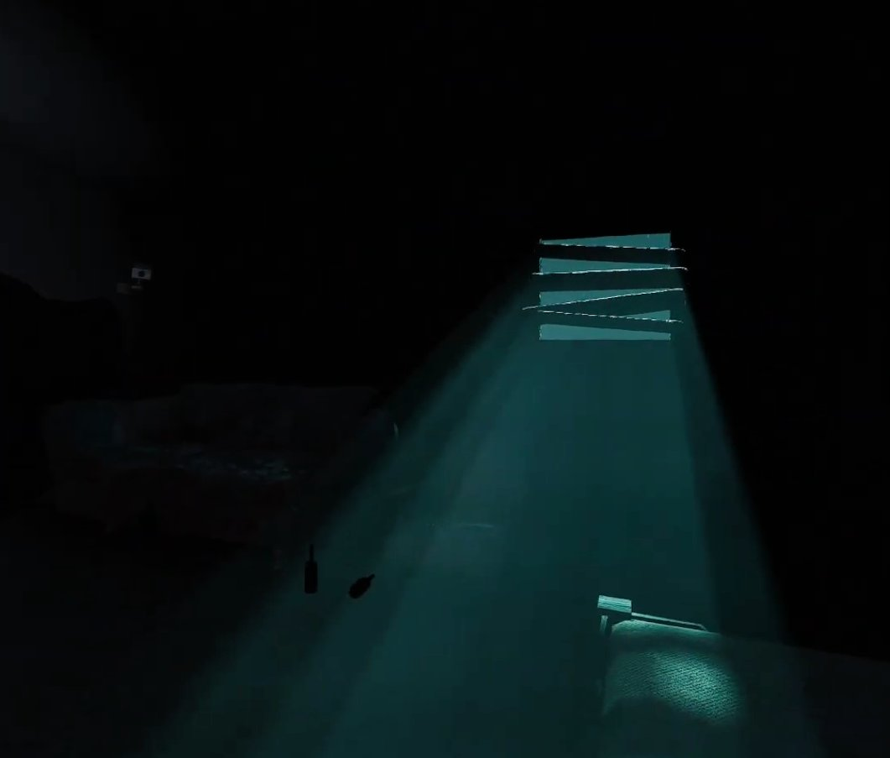
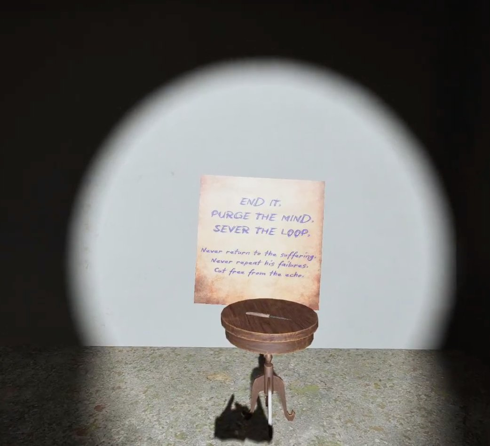
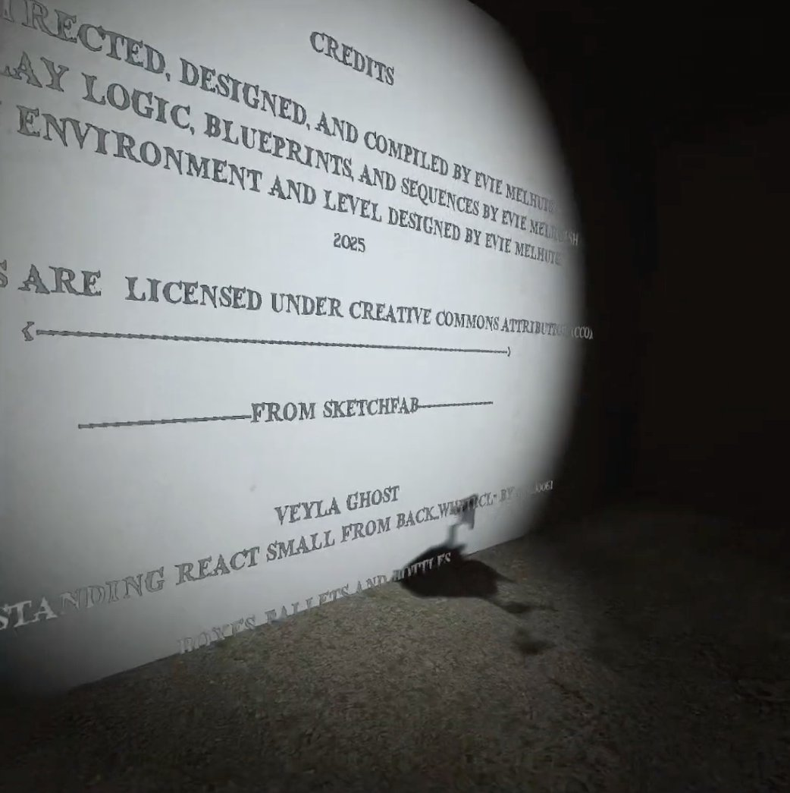
02 — Playable · Game Jam
Bubble Boundaries
A 2D puzzle-platformer where players use a bubble gun to create temporary platforms — crossing gaps, blocking enemy projectiles, and climbing increasingly complex vertical levels before each bubble pops. As team lead and co-developer, I built the player movement, bubble-gun mechanics with ammo management, UI, and level progression framework.
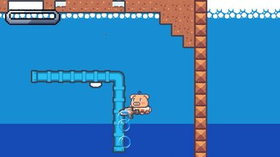
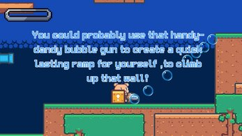
03 — 3D Art · Rigging · Animation
Sky Kid
Inspired by Sky: Children of the Light, a fully modeled, rigged, and animated character taken from concept sketch to playable game asset. Bone structure and animation cycles (Bow, Light Wave, Run/Jump/Idle) were rendered from multiple angles, converted to 2D sprite sheets, and imported into Unreal as a 2.5D playable character — 3D fidelity with 2D performance.
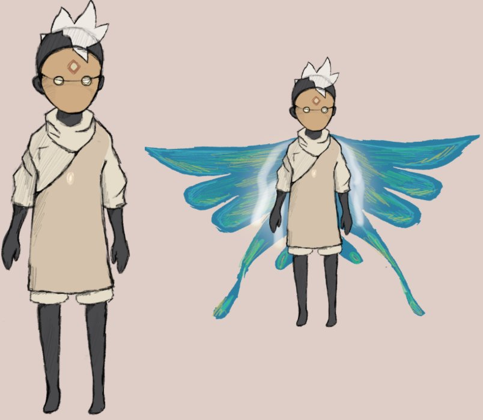
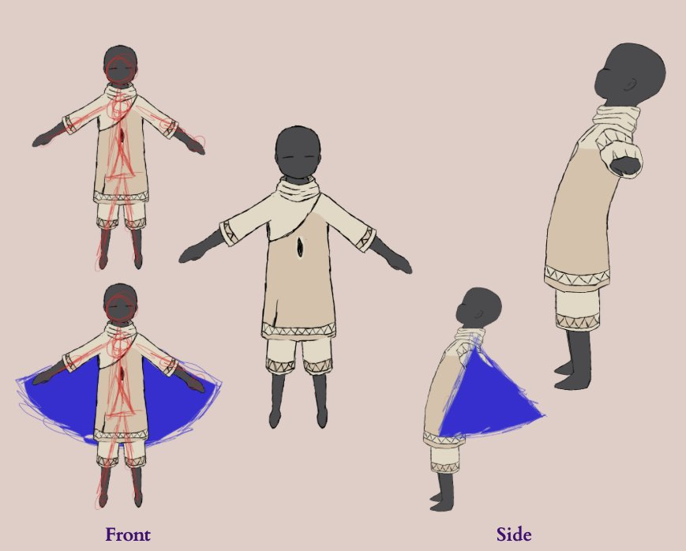
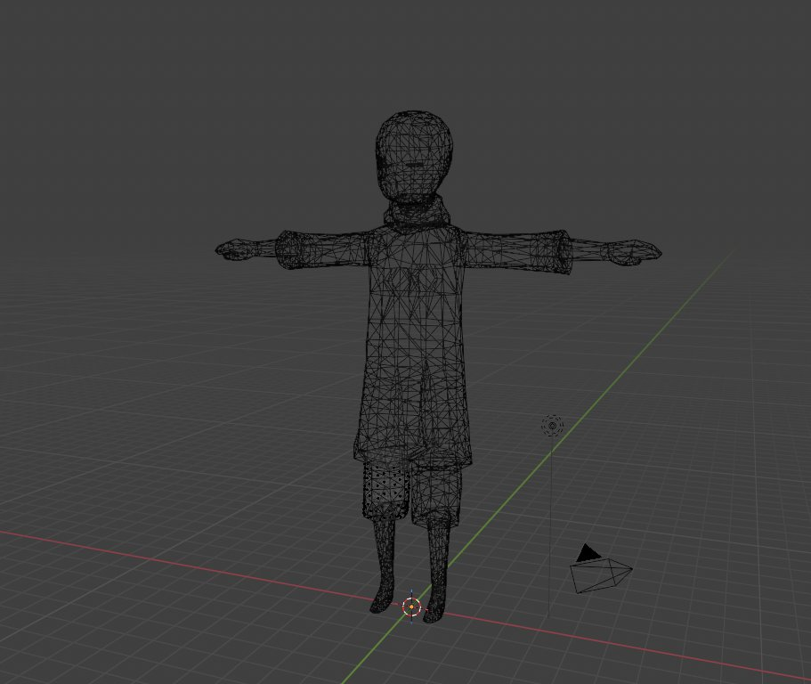
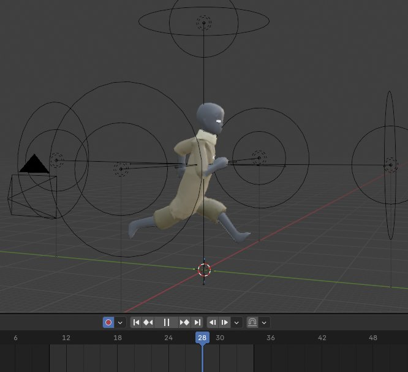
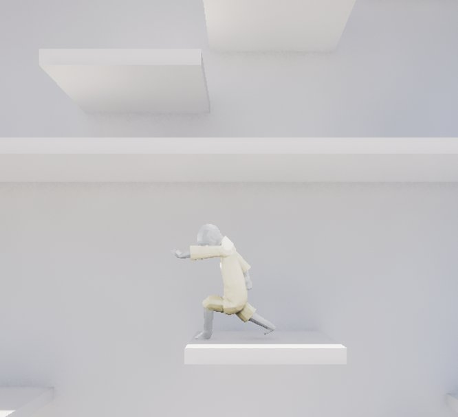
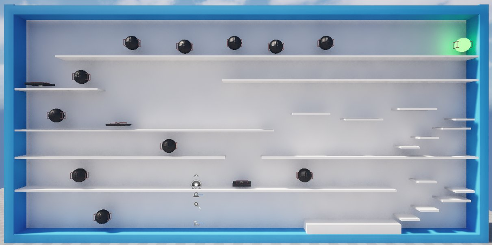
04 — Playable · Group Project
RetroChicken
A 2D breeding simulation where players breed chickens backwards into microraptors to redeem a disgraced biologist's career — inspired by Stardew Valley's visuals and Wobbledogs' genetics system. As primary programmer and artist I built the pathfinding, hunger system, breeding menu, and every genetic trait sprite; the hardest part was a collision-based feeding system solved entirely within the chicken class, with no globals.
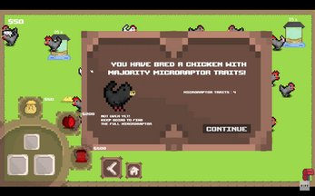
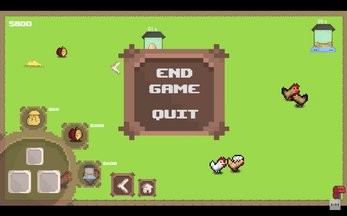
05 — First Project · Introductory Programming
Elemental Expedition
A 2D co-op platformer inspired by Fireboy and Watergirl: two characters with elemental abilities — fire and water — navigate dark, obstacle-filled levels that each character interacts with differently. My introduction to game development, and the project that taught me collision detection hides far more complexity than it looks like from the outside. All sprites, tiles, and UI were designed and drawn by me.
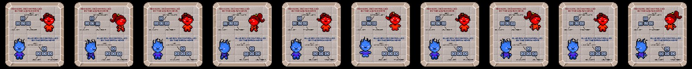
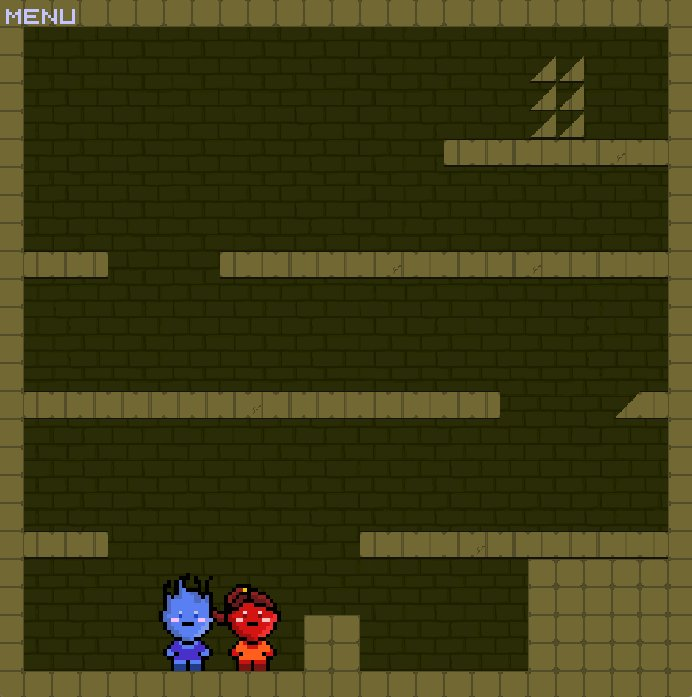
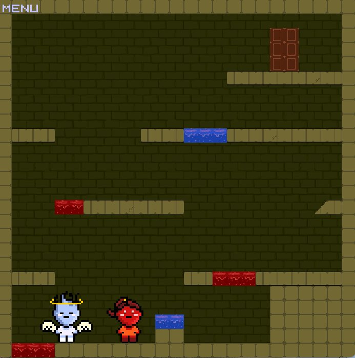
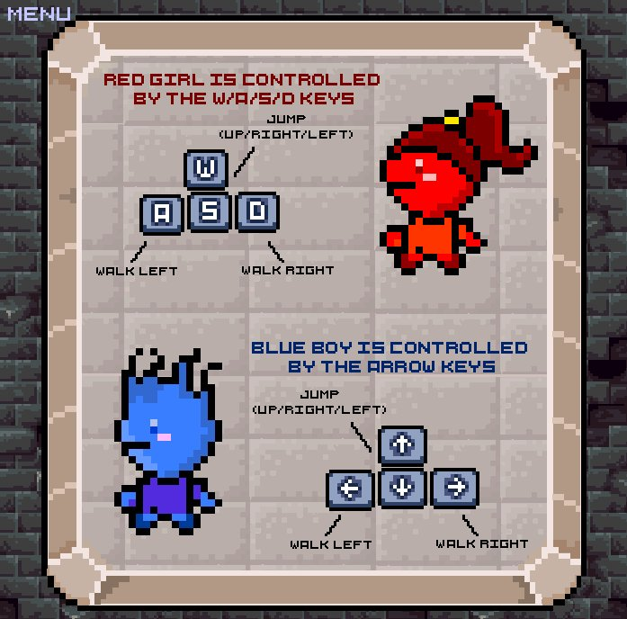
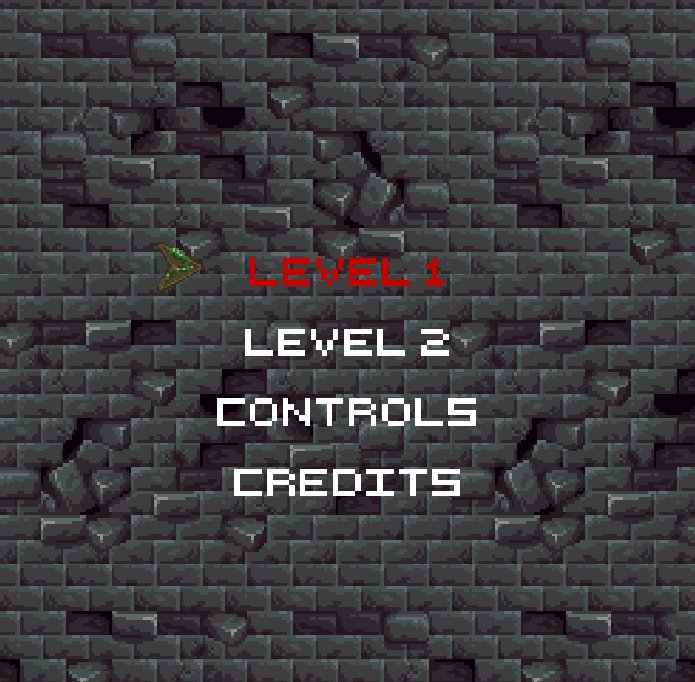